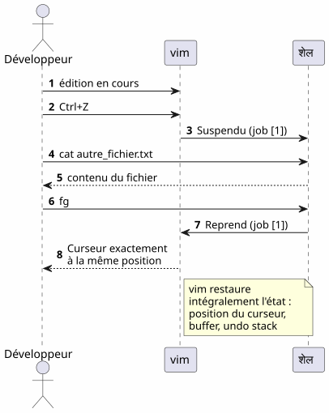
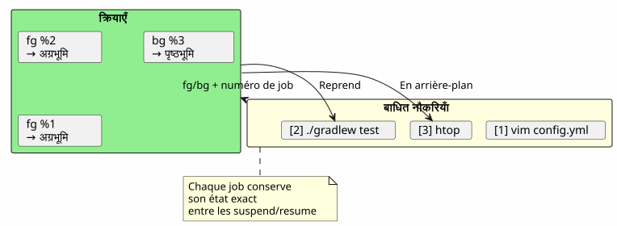
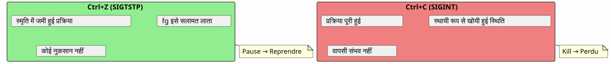
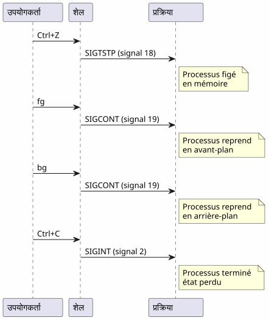

फ़ग कमांड के सुपर टिप्स: जब Ctrl+Z आपके टर्मिनल सत्र को बचाता है
Publié le 18 April 2026
- समस्या : एक व्यस्त टर्मिनल
- तीन अनिवार्य आदेश
- परिदृश्य 1 : लंबा बिल्ड
- स्केनेरियो 2: भुला हुआ संपादक
- परिदृश्य 3: opencode प्रक्रिया निलंबित
- परिदृश्य 4: कई जॉब्स को एक साथ प्रबंधित करें
- fg, bg, Ctrl+Z, Ctrl+C और & के अंतर
- Bake (generate) the site jbake -b
- Bake and serve locally jbake -b -s
- Bake and watch for changes jbake -b --reset
- Specify source and destination jbake source_folder output_folder
- Clear the output directory before baking jbake -b . output --resetगैर-विध्वंसक# JBake CLI Commands
`# Initialize a new JBake project jbake -i - Bake (generate) the site jbake -b
- Bake and serve locally jbake -b -s
- Bake and watch for changes jbake -b --reset
- Specify source and destination jbake source_folder output_folder
- Clear the output directory before baking jbake -b . output --reset
` - Bake (generate) the site jbake -b
- Bake and serve locally jbake -b -s
- Bake and watch for changes jbake -b --reset
- Specify source and destination jbake source_folder output_folder
- Clear the output directory before baking jbake -b . output --reset
`है :
आप फेंकते हैं`./gradlew build`, टर्मिनल 3 मिनट के लिए ब्लॉक किया गया है, और आपको कुछ और करने की आवश्यकता है en attendant ? नए टैब खोलने की आवश्यकता नहीं है.`Ctrl+Z`प्रक्रिया को सस्पेंड करें`fg`इसे बिल्कुल वहीं लाया जाता है जहाँ आपने उसे छोड़ा था। यह डेवलपर के दैनिक जीवन का सबसे कम आंका जाने वाला यूनिक्स टिप है।
- सामग्री की तालिका
-
[]
समस्या : एक व्यस्त टर्मिनल
हर डेवलपर ने इस स्थिति को अनुभव किया है:
$ ./gradlew build
> Building...और आपको एक फ़ाइल देखनी है, एक लॉन्च करना है`git status`, या एक व्यस्त पोर्ट की जांच करें।
Failed to generate image: PlantUML preprocessing failed: [From <input> (line 6) ] @startuml skinparam backgroundColor #FEFEFE actor Développeur as dev participant "टर्मिनल" as term participant "Gradle ^^^^^ Syntax Error? (Assumed diagram type: sequence) @startuml skinparam backgroundColor #FEFEFE actor Développeur as dev participant "टर्मिनल" as term participant "Gradle ( प्रक्रिया )" as gradle dev -> term : ./gradlew build term -> gradle : Lance le build gradle -> term : Occupe le terminal\n(pas de prompt) dev -> term : veut taper une commande term --> dev : ❌ Terminal bloqué note right of dev Le développeur est paralysé pendant toute la durée du build end note @enduml
अधिकांश डेवलपर्स एक नया टर्मिनल खोलते हैं। लेकिन एक अधिक सुंदर, तेज़ और मूल समाधान मौजूद है: जॉब प्रबंधन।
तीन अनिवार्य आदेश
Ctrl+Z — रोकें (SIGTSTP)
`Ctrl+Z`सिग्नल भेजो`SIGTSTP`अग्रभूमि प्रक्रिया में. प्रक्रिया हैनिलंबित— नहीं मारा गया — और टर्मिनल अपना प्रॉम्प्ट फिर से प्राप्त करता है।
$ ./gradlew build
> Building...
^Z
[1]+ Stoppé ./gradlew build
$कोष्ठकों के बीच की संख्या`[1]` est le जॉब नंबर. Le `+`डिफ़ॉल्ट जॉब को दर्शाता है।
fg — अग्रभूमि में लाएँ
`fg`यह निलंबित कार्य को अग्रभूमि में लाता है। प्रक्रिया ठीक उसी स्थान से फिर से शुरू हो जाती है जहाँ वह रुकी थी।
$ fg
./gradlew build
> Building... (reprend où il en était)एक विशिष्ट जॉब नंबर के साथ:
$ fg %2bg — पृष्ठभूमि में जारी रखना
`bg`प्रक्रिया को टर्मिनल ब्लॉक किए बिना फिर से शुरू करता है। लंबे बील्ड्स के लिए आदर्श।
$ bg
[1]+ ./gradlew build &
$Le `&`अंत में इसका मतलब है कि प्रक्रिया बैकग्राउंड में चल रही है.
jobs — शेल के कार्यों को सूचीबद्ध करना
$ jobs
[1]- Stoppé vim README.md
[2]+ En cours ./gradlew buildFailed to generate image: PlantUML preprocessing failed: [From <input> (line 6) ] @startuml skinparam backgroundColor #FEFEFE skinparam defaultFontName sans-serif state "अग्रभूमि\n(ब्लॉक्ड टर्मिनल)" as fg #LightCoral state "निलंबित ^^^^^ Syntax Error? (Assumed diagram type: state) @startuml skinparam backgroundColor #FEFEFE skinparam defaultFontName sans-serif state "अग्रभूमि\n(ब्लॉक्ड टर्मिनल)" as fg #LightCoral state "निलंबित (Ctrl+Z)" as stopped #LightYellow state "पृष्ठभूमि\n(bg)" as bg_ #LightGreen [*] --> fg : Lance une commande fg --> stopped : Ctrl+Z\n(SIGTSTP) stopped --> fg : fg\nreprend en avant-plan stopped --> bg_ : bg\nreprend en arrière-plan bg_ --> fg : fg\nramène en avant-plan fg --> [*] : Commande terminée note right of stopped Le processus est figé mais _pas_ tué end note note left of bg_ Le terminal est libre le build continue end note @enduml
परिदृश्य 1 : लंबा बिल्ड
यह सबसे सामान्य उपयोग का मामला है। आप एक Gradle बिल्ड शुरू करते हैं, टर्मिनल ब्लॉक हो जाता है, और आपको कुछ अन्य करने की आवश्यकता होती है।
Failed to generate image: PlantUML preprocessing failed: [From <input> (line 8) ] @startuml skinparam backgroundColor #FEFEFE autonumber actor Développeur as dev participant "टर्मिनल" as term participant "Gradle" as gradle database "स्थिति ^^^^^ Syntax Error? (Assumed diagram type: sequence) @startuml skinparam backgroundColor #FEFEFE autonumber actor Développeur as dev participant "टर्मिनल" as term participant "Gradle" as gradle database "स्थिति प्रक्रिया" as state dev -> term : ./gradlew build term -> gradle : Lance le build gradle -> state : En cours (FG) dev -> term : Ctrl+Z term -> state : Suspendu (job [1]) term --> dev : Prompt libre $ dev -> term : git status term --> dev : working tree clean dev -> term : fg term -> state : Reprend (FG) gradle --> dev : Build réussi ✓ note right of state Le processus Gradle n'a jamais été tué Il reprend exactement où il s'était arrêté end note @enduml
चरण-दर-चरण
$ ./gradlew build
> Building...
^Z
[1]+ Stoppé ./gradlew build
$ git status
On branch main
nothing to commit, working tree clean
$ fg
./gradlew build
> Building...
BUILD SUCCESSFUL in 2m 34sस्केनेरियो 2: भुला हुआ संपादक
आप में हैं`vim`, आपको किसी अन्य फ़ाइल को देखना है बिना बाहर निकले`vim`.
# Dans vim, en mode commande :
:shell
$ cat /path/to/other/file.txt
$ exit
# Retour dans vimलेकिन यह भारी है। के साथ`Ctrl+Z`, यह तुरंत है :
# Dans vim, n'importe quel moment :
Ctrl+Z
[1]+ Stoppé vim README.md
$ cat /path/to/other/file.txt
# ... lire le fichier ...
$ fg
vim README.md
# Retour exact là où on en était, curseur en place
</think> (No output)vim`यह अपनी स्थिति को पूरी तरह से बहाल करता है एक`fg: कर्सर की स्थिति, बफ़र की सामग्री, अनडू इतिहास — सब कुछ संरक्षित है.
परिदृश्य 3: opencode प्रक्रिया निलंबित
यह वह परिदृश्य है जिसने इस लेख को प्रेरित किया। आप उपयोग कर रहे हैं`opencode`(CLI टूल आपके कोड पर एक LLM को नियंत्रित करने के लिए), और प्रक्रिया निलंबित है।
Failed to generate image: PlantUML preprocessing failed: [From <input> (line 7) ] @startuml skinparam backgroundColor #FEFEFE skinparam defaultFontName sans-serif skinparam componentStyle rectangle actor Développeur as dev participant "opencode ^^^^^ Syntax Error? (Assumed diagram type: sequence) @startuml skinparam backgroundColor #FEFEFE skinparam defaultFontName sans-serif skinparam componentStyle rectangle actor Développeur as dev participant "opencode (LLM एजेंट)" as agent participant "शेल" as shell participant "गिट" as git dev -> agent : Session active agent -> agent : Tour de parole\ndu LLM en cours note over agent Ctrl+Z arrive en plein milieu d'une analyse de code end note dev -> agent : Ctrl+Z agent -> shell : Suspendu (job [1]) dev -> git : git diff git --> dev : changements visibles dev -> shell : fg shell -> agent : Reprend (job [1]) agent --> dev : Reprend exactement\nl'analyse en cours note right of agent Aucune perte de contexte Le LLM reprend sa réponse exactement où il en était end note @enduml
$ opencode
# ... session en cours, LLM analyse le code ...
^Z
[1]+ Stoppé opencode
$ git diff HEAD~1
# vérifier les changements récents
$ fg
opencode
# Le LLM reprend là où il s'était arrêtéफ़ायदा दोगुना है :
-
कोई संदर्भ हानि नहींLLM सत्र, वार्तालाप का इतिहास, खुले फ़ाइलें — सब कुछ संरक्षित है
-
रीबूट नहीं: opencode को पुनः प्रारंभ करने की आवश्यकता नहीं है, संदर्भ को पुनः लोड करने की आवश्यकता नहीं है, LLM को समस्या की पुनः व्याख्या करने की आवश्यकता नहीं है
परिदृश्य 4: कई जॉब्स को एक साथ प्रबंधित करें
fg et `bg`वे एक जॉब नंबर स्वीकार करते हैं एक विशेष प्रक्रिया को लक्ष्य करने के लिए जब कई निलंबित हैं।
$ vim config.yml
^Z
[1]+ Stoppé vim config.yml
$ ./gradlew test
^Z
[2]+ Stoppé ./gradlew test
$ htop
^Z
[3]+ Stoppé htop
$ jobs
[1] Stoppé vim config.yml
[2]- Stoppé ./gradlew test
[3]+ Stoppé htop
$ fg %2
./gradlew test
# Le build reprend en avant-plan
$ bg %3
[3] htop &
# htop reprend en arrière-plan
कार्यों के आदेशों का सारांश
| आदेश | प्रभाव | उदाहरण |
|---|---|---|
|
प्रक्रिया को अग्रभूमि में निलंबित करें |
भेजने का`SIGTSTP` |
|
डिफ़ॉल्ट जॉब को फ़ोरग्राउंड में फिर से शुरू करें |
|
|
जॉब अग्रभूमि में फिर से शुरू करता है |
|
|
डिफ़ॉल्ट जॉब को पृष्ठभूमि में फिर से शुरू करें |
|
|
न के जॉब को पृष्ठभूमि में फिर से शुरू करें |
|
|
वर्तमान शेल के कार्यों की सूची बनाएँ |
|
|
job completo करो n |
|
fg, bg, Ctrl+Z, Ctrl+C और & के अंतर
बहुत से डेवलपर्स इन तंत्रों को भ्रमित करते हैं। यहाँ एक निर्णायक स्पष्टीकरण दिया गया है।
Failed to generate image: PlantUML preprocessing failed: [From <input> (line 7) ]
@startuml
skinparam backgroundColor #FEFEFE
skinparam defaultFontName sans-serif
rectangle "**Ctrl+Z**\nSIGTSTP" as ctrlz #LightYellow {
card "प्रक्रिया को निलंबित करें
(यह अभी भी मेमोरी में है)
^^^^^
Syntax Error? (Assumed diagram type: activity)
@startuml
skinparam backgroundColor #FEFEFE
skinparam defaultFontName sans-serif
rectangle "**Ctrl+Z**\nSIGTSTP" as ctrlz #LightYellow {
card "प्रक्रिया को निलंबित करें
(यह अभी भी मेमोरी में है)
fg/bg के साथ उपयोग करने योग्य" as c1
}
rectangle "**Ctrl+C**\nSIGINT" as ctrlc #LightCoral {
card "प्रक्रिया को मारें
(वापसी संभव नहीं)
सभी स्थिति की हानि" as c2
}
rectangle "**& **\n(पृष्ठभूमि)" as ampersand #LightGreen {
card "सीधे लॉन्च करें
पृष्ठभूमि में
तुरंत मुक्त टर्मिनल" as c3
}
rectangle "**fg**\n(अग्रभूमि)" as fg_ #SkyBlue {
card "एक जॉब लाओ
फॉरग्राउंड में सस्पेंडेड
टर्मिनल व्यस्त" as c4
}
rectangle "**bg**\n(पृष्ठभूमि)" as bg_ #Lavender {
card "एक काम फिर से शुरू
पृष्ठभूमि में निलंबित
मुक्त टर्मिनल" as c5
}
ctrlz -right-> fg_ : fg pour reprendre
ctrlz -right-> bg_ : bg pour continuer\nen arrière-plan
ctrlc -right-> c2 : Pas de retour\nprocessus tué
note bottom of ctrlz
Le processus est **figé**
mais **pas tué**
end note
note bottom of ampersand
Alternative : lancer
./gradlew build &
directement en arrière-plan
end note
@enduml
| शॉर्टकट/कमांड | सिग्नल | प्रभाव | वापस लौटना? |
|---|---|---|---|
|
|
प्रक्रिया को निलंबित करें (जमा, मेमोरी में) |
हाँ :`fg` ou |
|
|
प्रक्रिया को मारें (समाप्त) |
नहीं: नष्ट प्रक्रिया |
|
|
प्रक्रिया मारो + core dump |
नहीं : नष्ट प्रक्रिया |
|
(No output) |
बैकग्राउंड में सीधे लॉन्च करें |
`fg`इसे सामने लाने के लिए |
Ctrl+Z`JBake संदर्भ (यह सामग्री JBake टेम्प्लेट और कन्वेंशन का उपयोग करती है): # JBake CLI कमांड `` # Initialize a new JBake project jbake -i
|
Bake (generate) the site jbake -b
Bake and serve locally jbake -b -s
Bake and watch for changes jbake -b --reset
Specify source and destination jbake source_folder output_folder
Clear the output directory before baking jbake -b . output --resetगैर-विध्वंसक# JBake CLI Commands ` # Initialize a new JBake project jbake -i
Bake (generate) the site jbake -b
Bake and serve locally jbake -b -s
Bake and watch for changes jbake -b --reset
Specify source and destination jbake source_folder output_folder
Clear the output directory before baking jbake -b . output --reset `
fr से hi में अनुवाद करें सभी बैकटिक कोड स्पैन (…) को बिल्कुल वैसा ही रखें — बैकटिक की सामग्री, स्पेसिंग, या स्थिति कभी न बदलें। यह पाठ बड़े वाक्य का एक अंश हो सकता है — अंश का अनुवाद अधिक संदर्भ मांगे बिना करें। केवल अनुवादित पाठ आउटपुट करें — कोई स्पष्टीकरण, कोई टिप्पणी, कोई परिचय, कोई विकल्प, कोई विकल्प नहीं।
-
प्रक्रिया स्मृति में वैसे ही स्थिर है। आप तुरंत इसे जारी रख सकते हैं`fg`. यह एक pause है, एक stop नहीं.
एक जॉब का पूरा जीवन चक्र
Failed to generate image: PlantUML preprocessing failed: [From <input> (line 7) ] @startuml skinparam backgroundColor #FEFEFE skinparam defaultFontName sans-serif title शेल जॉब का पूर्ण जीवन चक्र state "अस्तित्वहीन" as none state "अग्रभूमि ^^^^^ Syntax Error? (Assumed diagram type: state) @startuml skinparam backgroundColor #FEFEFE skinparam defaultFontName sans-serif title शेल जॉब का पूर्ण जीवन चक्र state "अस्तित्वहीन" as none state "अग्रभूमि (टर्मिनल को घेरता है)" as foreground #LightCoral state "निलंबित\n(Ctrl+Z / SIGTSTP)" as suspended #LightYellow state "पृष्ठभूमि\n(bgまたは &)" as background #LightGreen state "समाप्त (exit code 0)" as done #LightGray [*] --> none none --> foreground : tape une commande foreground --> suspended : Ctrl+Z foreground --> done : fin normale suspended --> foreground : fg suspended --> background : bg suspended --> done : kill %n background --> foreground : fg background --> done : fin normale\n(en arrière-plan) background --> suspended : Ctrl+Z\n(si fg puis Ctrl+Z) done --> [*] note right of suspended L'état suspendu est le pivot de tout le système de jobs end note @enduml
उन्नत टिप्स
fg नौकरी के साथ सबसे नया और अल्टरनेन्स
fg`कोई तर्क नहीं होने पर चिह्नित काम लौटाता है+(सबसे हालिया). लेकिन आप भी इसका उपयोग कर सकते हैं%-`पिछले जॉब को लक्ष्य करने के लिए :
$ vim file1.txt
^Z
[1]+ Stoppé vim file1.txt
$ vim file2.txt
^Z
[2]+ Stoppé vim file2.txt
$ fg # ramène job [2] (le plus récent)
$ fg %- # ramène job [1] (le précédent)काम को सही तरीके से पूरा करना
$ jobs
[1]- Stoppé vim config.yml
[2]+ Stoppé ./gradlew test
$ kill %2 # envoie SIGTERM au job 2
$ kill -9 %1 # envoie SIGKILL au job 1 (force)désown : शेल से अलग करें
disown`शेल की जॉब टेबल से एक जॉब हटाएँ। प्रक्रिया चलती रहती है लेकिन अब इसे वापस नहीं लाया जा सकता`fg:
$ ./gradlew build &
[1] 12345
$ disown %1
# Le processus continue mais n'est plus lié au shell
# Ça survives à la fermeture du terminalnohup के साथ मिलाएँ लंबी प्रक्रियाओं के लिए
एक प्रक्रिया टर्मिनल बंद होने के बाद भी जीवित रहने के लिए :
$ nohup ./gradlew build &
[1] 12345
$ disown %1
# Le build continue même si vous fermez le terminalFailed to generate image: PlantUML preprocessing failed: [From <input> (line 7) ]
@startuml
skinparam backgroundColor #FEFEFE
skinparam defaultFontName sans-serif
rectangle "fg" as fg_ #SkyBlue {
card "जॉब लाओ
सबसे हाल का (+)" as f1
^^^^^
Syntax Error? (Assumed diagram type: activity)
@startuml
skinparam backgroundColor #FEFEFE
skinparam defaultFontName sans-serif
rectangle "fg" as fg_ #SkyBlue {
card "जॉब लाओ
सबसे हाल का (+)" as f1
card "एक नौकरी को लक्ष्य बनाएँ
विशिष्ट : fg %n" as f2
card "बदलें : fg %-" as f3
}
rectangle "मारो %n" as kill_ #LightCoral {
card "SIGTERM (स्वच्छ)" as k1
card "SIGKILL -9 (बल)" as k2
}
rectangle "इन्कार करना" as disown #Lavender {
card "शेल से अलग करें\n(डिस्कनेक्शन के दौरान जीवित रहता है)" as d1
}
rectangle "nohup + &" as nohup_ #LightGreen {
card "इम्यूनाइज़्ड प्रक्रिया
SIGHUP के खिलाफ
(टर्मिनल के बंद होने पर जीवित रहता है)" as n1
}
fg_ -right-> kill_ : si faut\nterminer
kill_ -right-> disown_ : ou détacher
nohup_ -left-> fg_ : fg ramène en\navant-plan
note bottom of disown_
Après disown, fg ne peut
plus ramener le job
end note
@enduml
जाल और सामान्य त्रुटियाँ
Ctrl+Z और Ctrl+C को भ्रमित करना
यह सबसे सामान्य त्रुटि है।`Ctrl+C`प्रक्रिया को मारता है।`Ctrl+Z`वह निलंबित कर देता है। यदि आप दबाते हैं`Ctrl+C`reflex से, पूरी स्थिति खो जाती है — खुले फ़ाइलें, LLM सत्र, चल रहे बिल्ड।

जॉब्स शेल के लिए स्थानीय होते हैं
jobs, fg et `bg`वे केवल उसी शेल में काम करते हैं जिसने प्रक्रियाओं को लॉन्च किया। यदि आप एक नया टर्मिनल खोलते हैं, तो आप दूसरे के जॉब्स नहीं देख पाएंगे।
# Terminal 1
$ vim file.txt
^Z
[1]+ Stoppé vim file.txt
# Terminal 2 (nouveau)
$ jobs
# (rien — les jobs sont locaux au shell)सिस्टम-वाइड प्रक्रियाएँ देखने के लिए, उपयोग करें`ps` ou htop:
ps aux | grep vimजॉब्स शेल बंद होने पर जीवित नहीं रहते।
यदि आप टर्मिनल बंद कर देते हैं, तो सभी निलंबित या बैकग्राउंड जॉब्स नष्ट हो जाते हैं। एक प्रक्रिया को जीवित रखने के लिए, उपयोग करें`nohup`+disown:
$ nohup ./gradlew build &
[1] 12345
$ disown %1
# Fermer le terminal → le build continueइंटरएक्टिव प्रक्रियाएँ और fg
कुछ इंटरएक्टिव प्रोग्राम एक के बाद अच्छा प्रदर्शन नहीं करते`Ctrl+Z`+fg. यह दुर्लभ है लेकिन ऐसा होता है :
-
कुछ प्रोग्राम जो संकेतों का उपयोग करते हैं (vim, htop, less) अच्छी तरह से काम करते हैं`Ctrl+Z`)
-
लंबे नेटवर्क प्रोग्राम (ssh, opencode) सामान्यतः सही ढंग से पुनर्प्राप्त होते हैं
-
टर्मिनल (ncurses) को संशोधित करने वाले कार्यक्रम कभी‑कभी टर्मिनल को अपेक्षित नहीं स्थिति में छोड़ सकते हैं।
भ्रष्ट टर्मिनल के बाद एक`fg`, टाइप करें :
resetसारांश आरेख
Failed to generate image: PlantUML preprocessing failed: [From <input> (line 10) ]
@startuml
skinparam backgroundColor #FEFEFE
skinparam defaultFontName sans-serif
skinparam ArrowColor #444444
title "fg — टिप्स जो सब कुछ बदल देते हैं"
rectangle "**समस्या**" as problem #LightCoral {
card "टर्मिनल अवरुद्ध
एक प्रक्रिया द्वारा" as p1
^^^^^
Syntax Error? (Assumed diagram type: activity)
@startuml
skinparam backgroundColor #FEFEFE
skinparam defaultFontName sans-serif
skinparam ArrowColor #444444
title "fg — टिप्स जो सब कुछ बदल देते हैं"
rectangle "**समस्या**" as problem #LightCoral {
card "टर्मिनल अवरुद्ध
एक प्रक्रिया द्वारा" as p1
card "नया\nटर्मिनल खोलना = भारी समाधान" as p2
}
rectangle "समाधान" as solution #LightGreen {
card "Ctrl+Z → निलंबित" as s1
card "fg → फिर से शुरू करता है" as s2
card "bg → पृष्ठभूमि में" as s3
card "jobs → voir les suspendus" as s4
}
rectangle "**लाभ**" as advantages #SkyBlue {
card "संदर्भ की हानि नहीं" as a1
card "रीस्टार्ट नहीं" as a2
card "एक टर्मिनल पर्याप्त है" as a3
}
problem -right-> solution : "Unix का स्वाभाविक समाधान 40 वर्षों से"
solution -right-> advantages : "परिणाम"
note bottom of advantages
fg n'est pas un tips obscur
C'est un mécanisme fondamental
du shell Unix
end note
@enduml
fg क्यों कम आंका गया
अधिकांश आधुनिक डेवलपर्स खोजते हैं`fg`देर से, या कभी नहीं। कुछ कारण :
-
IDE टर्मिनल छुपाते हैं: VS Code एक इंटीग्रेटेड टर्मिनल प्रदान करता है, लेकिन कई टैब बनाते हैं`fg`दिखने में कम आवश्यक
-
ग्राफ़िकल टूल्स CLI को प्रतिस्थापित करते हैं: फ़ाइल प्रबंधक, सिस्टम मॉनिटर, ग्राफ़िकल Git क्लाइंट
-
tmux और स्क्रीन: ये मल्टीप्लेक्सर्स एक ही समस्या को अलग तरीके से हल करते हैं, लेकिन`fg`यह अधिक सरल और हमेशा उपलब्ध है
फिर भी,fg# JBake CLI Commands ` # Initialize a new JBake project jbake -i
Bake (generate) the site jbake -b
Bake and serve locally jbake -b -s
Bake and watch for changes jbake -b --reset
Specify source and destination jbake source_folder output_folder
Clear the output directory before baking jbake -b . output --reset ` है :
-
सार्वभौमिकसभी POSIX शेल्स में मौजूद (bash, zsh, fish…)
-
निर्भरता के बिना: tmux या स्क्रीन इंस्टॉल करने की ज़रूरत नहीं
-
तत्क्षणिक: दो हमले (
Ctrl+Z`फिर`fg) रोकने और फिर से शुरू करने के लिए -
संदर्भ संरक्षक : l’état du processus est intact
Failed to generate image: PlantUML preprocessing failed: [From <input> (line 6) ]
@startuml
skinparam backgroundColor #FEFEFE
skinparam defaultFontName sans-serif
rectangle "fg है
कम आंका गया ?" as why #LightCoral {
^^^^^
Syntax Error? (Assumed diagram type: activity)
@startuml
skinparam backgroundColor #FEFEFE
skinparam defaultFontName sans-serif
rectangle "fg है
कम आंका गया ?" as why #LightCoral {
card "IDE के साथ टर्मिनल\nबहु-टैब" as w1
card "ग्राफ़िकल उपकरण
जो CLI को बदलते हैं" as w2
card "tmux/screen समस्या को अन्य तरीके से हल करते हैं" as w3
}
rectangle "क्यों fg है
बेहतर ?" as superior #LightGreen {
card "सार्वत्रिक : bash,
zsh, fish, sh..." as s1
card "निर्भरता रहित:\nइंस्टॉलेशन नहीं" as s2
card "दो हमले:\nCtrl+Z फिर fg" as s3
card "संरक्षित संदर्भ:
शून्य राज्य हानि" as s4
}
why -right-> superior : "सादगी
हमेशा जीतती है"
@enduml
तकनीकी ज्ञापन : संकेत
जिज्ञासु लोगों के लिए, यहाँ संलग्न संकेत हैं:
| सिग्नल | नाम | भेजा गया | प्रभाव |
|---|---|---|---|
2 |
|
|
बाधा — प्रक्रिया समाप्त कर देती है |
3 |
|
|
कोर डंप के साथ बाहर निकलता |
18 |
|
|
इंटरैक्टिव स्टॉप — प्रक्रिया को निलंबित करता है |
19 |
|
|
जारी रखें — एक निलंबित प्रक्रिया को फिर से शुरू करता है |
15 |
|
|
स्वच्छ समापन |
9 |
|
|
जबरदस्त समाप्ति (इसे अवरोधित नहीं किया जा सकता) |
पूर्ण प्रवाह:

निष्कर्ष
`fg`यह एक अस्पष्ट सुझाव नहीं है — यह यूनिक्स शेल का एक मौलिक तंत्र है, जो 1970 के दशक से उपलब्ध है। अधिकांश डेवलपर्स द्वारा इसे अनदेखा करना हमारे युग का एक लक्षण है: IDE और मल्टीप्लेक्सर्स ने हमें मूल बातों से दूर कर दिया है।
लेकिन जब आप एक SSH सर्वर पर हैं, एक न्यूनतम टर्मिनल में हैं, या बस उपयोग कर रहे हैं`opencode`और LLM पूरी तरह से काम कर रहा है —Ctrl+Z, fg, bg, `jobs`हैं आपके सबसे अच्छे दोस्तों.
(No output) Ctrl+Z रोकता है, fg फिर से शुरू करता है। यह टर्मिनल की पॉज़‑प्ले है। (No output)
संदर्भ
-
man bash— खंड JOB CONTROL -
man signal— POSIX संकेतों की सूची